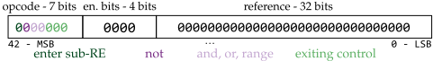
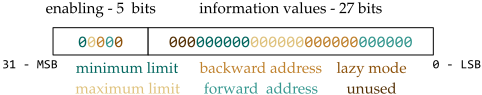
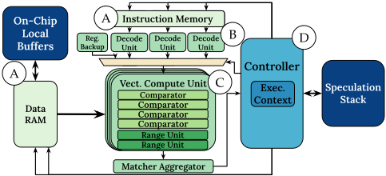
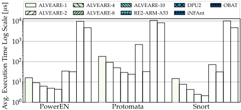
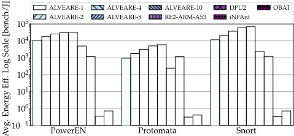

ALVEARE：一个面向正则表达式（Regular Expressions）的领域专用框架
正则表达式（RE）匹配广泛用于计算机安全、文本分析与蛋白质组学等数据流场景，但现有引擎要么依赖 CPU 软件灵活性而性能受限，要么是仅支持少量简单算子的固定加速器。ALVEARE 提出全栈软硬协同框架：把 RE 本身作为 DSL，设计 43 位定长、RISC 风格的专用 ISA，覆盖 POSIX ERE 与 PCRE 的 RANGE、NOT、有界/无界量词、greedy/lazy 等高级算子，并配套 FLEX/BISON 前端、AST/IR 中端优化与算子融合后端的编译流程。微架构采用向量化比较单元与 aggregator、三路预取译码、基于栈快照的 depth-first 式推测加回溯控制器处理高度数据依赖的控制流，并支持 1~10 核 scale-out，在 Ultra96v2 FPGA 上以 300 MHz 实现。对 RE2（ARM A53）与 Bluefield DPU 2 最高取得 34× 加速与 57× 能效提升，对 GPU 方案 OBAT 最低加速 356×。该工作属于领域专用加速器（DSA）研究，与团队存储/互连 IP 业务无直接交集。
RE 匹配在安全（如 Snort 深度包检测）、文本分析、蛋白质组学等场景需处理海量数据，且 RE 特性高度数据依赖，导致计算时间长、能耗高。现有方案分裂为：支持最全算子但性能受限的 CPU 软件引擎（嵌入式/近数据场景下主流 CPU 不可用或需节省其周期）；将 NFA 直接嵌入 FPGA/ASIC/存内的加速方案（缺乏 PCRE 级高级算子、重构时间长）；以及支持算子有限、主要面向数据中心的软件可编程 DSA。缺乏兼顾灵活性与效率、支持高级算子且面向受限/近数据场景的方案。
提出 ALVEARE 全栈框架：(1) 以 RE 为 DSL，设计 43 位定长、类 VLIW 算子组合的 RISC 风格 ISA，分 control/base/complex 三类算子，原生支持 RANGE、NOT、有界/无界量词、子模式 alternation 与 greedy/lazy 语义；(2) 编译流程：FLEX 词法分析 + BISON 语法分析生成 AST，中端做 lowering 与优化（连续指令隐式 AND、Kleene 算子转有界表示、\w/. 等不支持的算子展开、闭合算子与 base 算子融合），输出带相对跳转的 IR，后端生成二进制；(3) 微架构：指令/数据分离存储与三路（顺序/前跳/后跳）预取译码，4 个向量化 CU（每 CU 4 个比较器）加 aggregator 执行 base 算子，集中式控制器用栈保存执行状态快照，以 depth-first 式推测执行 complex 算子并在误预测时回溯；可复制 1~10 个独立核按数据流分片做 divide-and-conquer 并行。原型以 VHDL 实现于 Ultra96v2（AMD Zynq XCZU3EGA484），Vivado 2019.2 生成比特流，300 MHz，PYNQ 2.7 用于 Host-DSA 通信。
对 RE2（Ultra96 ARM A53，-O3）：单核加速 2.13×–4.86×，10 核 7.83×–34.68×（整体最高 34×）
对 NVIDIA Bluefield DPU 2 RE 加速器：10 核峰值加速 15.11×（真实 Snort 基准）
能效：对 DPU 峰值 57.88×、对 A53 峰值 29×；单核对 Snort 能效提升 9.78×，最差情况也与 SOTA 持平
对 GPU 方案（V100 上 iNFAnt 与 OBAT+hotstart）：10 核在 Protomata 上对 OBAT 最低加速 356×；单核能效高出约四个数量级
高级 ISA 原语压缩代码与周期数：有界量词 RE 4.66×、'.'+{3,6} RE 580×、NOT RANGE+greedy 量词 RE 33× 缩减；[a-z0-9] 可打包进单条 RANGE
10 核相对单核加速：合成基准 PowerEN 3×，真实基准 Protomata 与 Snort 约 7×
资源与功耗：1→10 核 BRAM 6.71%→67.13%、LUT 11.39%→84.65%；10 核整板功耗 7.05W（DPU 板 27W、A53 5.9W）
区别于三类已有路线：CPU 软件方案灵活但难满足低延迟近数据需求；FPGA/ASIC/存内方案直接嵌入 NFA，缺乏 PCRE 级高级算子且重构开销大；已有软件可编程 DSA（含 Bluefield DPU 2）支持的算子有限且主要面向数据中心。ALVEARE 的差异在于全栈协同设计：以 RE 为一等公民的专用 ISA、由编译器承担部分 RE 复杂度以简化 ISA 与微架构、以及用推测+回溯控制器完整支持 greedy/lazy 量词语义，并明确面向嵌入式/近数据受限场景而非数据中心。
相关度级别：low
命中能力域：无明显对应
理由：论文主题是面向正则表达式匹配的领域专用架构（ISA+编译器+微架构+FPGA 实现），应用场景为安全检测、文本分析与蛋白质组学的数据流 pattern matching，与本团队 LPDDR/DDR5/HBM4/UCIe 等存储与互连 IP 的架构定义、RTL 实现、时序物理、验证方法学、形式验证、仿真加速与 EDA 自动化七个能力域均无实质交集：其 FPGA 用作部署平台而非验证/emulation 手段，其 DSL 编译流程面向 RE 而非验证自动化，其推测回溯控制是 RE 数据依赖控制流特有的设计。上游 catalog 标注'无明显对应'与正文判断一致。
建议动作：暂不相关
Filippo Carloni filippo.carloni@polimi.it 米兰理工大学 意大利米兰 Davide Conficconi davide.conficconi@polimi.it 米兰理工大学 意大利米兰 Marco D. Santambrogio marco.santambrogio@polimi.it 米兰理工大学 意大利米兰
正则表达式（Regular Expression, RE）匹配能够在从蛋白质组学到计算机安全等异构领域的数据流中识别模式。这些场景需要大规模的数据分析，加之 RE 的高度数据依赖性，导致计算时间长、能耗高。目前，RE 引擎要么依赖（1）运行时修改 RE 的灵活性以及对多种运算符的广泛支持，但会损害性能；要么依赖（2）仅实现少量简单 RE 运算符的固定高性能加速器。为克服这些局限，我们提出 ALVEARE：一种将领域专用语言（Domain-Specific Language, DSL）与嵌入式领域专用体系结构相结合的软硬件方法。我们将 RE 用作 DSL，通过我们基于 RISC 的指令集体系结构（Instruction Set Architecture, ISA）将其转换为灵活的可执行代码，该 ISA 可表达从简单到高级的各类原语。随后，我们设计了一种基于推测（speculation）的微体系结构，以高效执行真实基准测试。ALVEARE 提供了 RE 领域的灵活性以及对多种运算符的广泛支持，与最先进的 RE2 以及配备 RE 加速器的 Bluefield DPU 2 相比，可实现高达 34 × 的加速比和 57 × 的能效提升。
正则表达式，领域专用体系结构
Filippo Carloni、Davide Conficconi 和 Marco D. Santambrogio。2024。ALVEARE：面向正则表达式的领域专用框架。载于第61届 ACM/IEEE 设计自动化会议（DAC '24），2024年6月23日至27日，美国加利福尼亚州旧金山。ACM，美国纽约州纽约，共6页。https://doi.org/10.1145/3649329.3657378
基于正则表达式（Regular Expressions, REs）的模式匹配在文本分析 [15]、计算机安全 [3, 7, 26] 和蛋白质组学 [18] 等多种场景中有着重要应用。然而，这些场景需要进行大规模数据分析，加之 REs 特性本身具有较高的数据依赖性，很快便会导致漫长的计算时间和高昂的能耗 [15, 16]。传统 REs 通过选择和迭代来表示模式，已超越简单的字符串匹配；而现代 REs 则展现出高级特性，需要比那些较简单的原语更为强大的原语 [21]。例如，字符类（如 [A-Z]）需要
允许免费制作本作品部分或全部内容的数字或硬拷贝供个人或课堂使用，前提是这些拷贝并非出于营利或商业优势目的而制作或分发，并且这些拷贝在首页带有本声明和完整的引用信息。本作品中第三方组件的版权必须得到尊重。如需用于其他所有用途，请联系所有者/作者。
© 2024，版权由所有者/作者持有。
ACM ISBN 979-8-4007-0601-1/24/06。
对所有字符进行选择，而有界重复则被转换为展开的连接序列（如 A{3,5}）。这种转换导致匹配引擎的性能扩展效率低下 [11]，使其管理颇具挑战，并且需要高级原语。
目前，最先进技术分为基于软件（Software, SW）的方案、基于自动机加速的方案和基于领域专用体系结构（Domain-Specific Architecture, DSA）的方案三类。第一类方案得益于中央处理器（CPU）的灵活性，能够支持最先进的运算符 [10, 24]。然而，低延迟系统需要贴近数据的分析，通常利用嵌入式处理器，以避免向中央系统进行代价高昂的数据传输，例如智能网卡（SmartNIC）上的数据包检查，这就将主流 CPU 排除在外 [8]。类似地，其他方法通过图形处理器（GPU）卸载来节省宝贵的 CPU 周期 [12]，但存在无法满足延迟要求的风险。第二类方法将自动机表示嵌入到存内（in-memory）解决方案 [5, 19] 或基于现场可编程门阵列（FPGA）的解决方案 [17] 中。然而，它们难以处理常用的高级 RE 运算符（例如 PCRE 标准中的运算符），甚至根本无法提供支持。最后，基于 DSA 的方法结合了前两类方法的优势，兼具 SW 的灵活性与硬件（Hardware, HW）的专用性 [2]。尽管如此，它们支持的原语数量有限 [4, 14]。
基于这些观察，我们提出了ALVEARE：一个全栈领域专用框架，旨在克服现有最先进技术的局限性，并面向受约束和近数据场景——在这类场景中，主流CPU要么不可用，要么节省其周期至关重要。我们将正则表达式（REs）用作领域专用语言（DSL），设计了一种新颖的领域特化、基于RISC的指令集架构（ISA），该架构经过专门定制，能够紧凑地表达REs最常见的运算符。随后，我们通过一种专门设计的领域专用架构（DSA），将编译流程的灵活性与硬件方法的效率相结合。我们在嵌入式FPGA上对我们的DSA进行了原型实现，并在不同场景下将其执行时间与能效同最先进的解决方案进行了对比评估。总体而言，针对受约束和近数据场景，ALVEARE相比最先进的解决方案实现了高达34×的加速比和57×的能效提升，同时以最低356×的加速比大幅超越基于GPU的解决方案。总而言之，我们做出了三方面的贡献：
当前的正则表达式（RE）匹配方案旨在兼顾效率与灵活性。具体而言，这些方案可依据所支持的算子、处理依赖关系的方式、是否采用非确定有限自动机（NFA）与确定有限自动机（DFA）模型，或是否采用枚举式与推测式方法来加以划分。这些引擎的一个关键特性在于其执行架构以及使其具备实际可用性的软件栈。
另一些方案则利用现场可编程门阵列（FPGA）[17]、专用集成电路（ASIC）[9]或存内（In-Memory）加速器 [5, 19, 20]，将其NFA表示形式直接嵌入给定架构的可重构结构中。在逻辑嵌入类方案中，FPGA是商业上可获得的平台中潜力更高的一类 [13]。然而，这些方法受制于高级原语的缺乏 [11]，并且与其他存内架构一样面临重构耗时长的问题 [13, 19, 25]。
基于中央处理器（CPU）的方案通常具有更高程度的灵活性 [10]，它们或试图从架构特性中挖掘性能 [24]，或利用算法改进在推测与枚举之间进行动态适配 [15, 16]。与之不同，基于图形处理器（GPU）的方案利用单指令多数据（SIMD）/单指令多线程（SIMT）能力实现多有限状态机（multi-FSM）与多步进（multi-striding）[12]，但该内核固有的尴尬串行（embarrassingly sequential）特性 [15] 极大地限制了其应用 [13]。
为填补灵活方案与高度专用方案之间的空白，软件可编程的领域专用架构（DSA）是一种颇具前景的途径，其将模式转换为待执行的指令序列 [2, 4, 6, 14, 22]。然而，这类方案对复杂的RE原语考虑甚少，且其主要面向的场景是数据中心。其中，NVIDIA Bluefield DPU 2 [2] 是一款带有RE加速器的智能网卡（SmartNIC），用于卸载模式匹配任务，从而避免消耗CPU周期。
我们的方法正属于这类以RE为中心的架构。然而，我们的DSA结合了全栈软硬件（HW/SW）方法，将RE作为一等公民加以支持，并覆盖广泛的算子。
我们的框架 1 利用一种灵活的基于RISC的指令集架构（ISA），将正则表达式（RE）分解为一组原语（§4），以支持被广泛采用的POSIX ERE和PCRE标准。该ISA分解为在字符内部执行的原语（例如连接或选择）以及在子RE之间执行的原语（例如计数器），并考虑了依赖关系与并行化机会。ALVEARE框架中以软件为中心的组件是领域专用语言（DSL）编译流程（§5）。其灵活性允许将RE的一部分复杂性上移至编译器，从而简化ISA与微架构的设计。最后，微架构在数据流上执行向量RE匹配，而一个定制的控制器则通过一种带有误预测回溯机制的类深度优先推测方法来处理数据依赖与控制问题（§6）。
该指令集架构（ISA）采用一种类似于超长指令字（VLIW）方法的算子组合策略来构建高级指令，但指令长度固定。如图1所示，每条指令宽度为43位，可划分为三个字段：操作码（opcode）、使能字符（enabling character）和引用（reference）。
第42至36位对操作进行编码；当对应位被置为' 1 '时，相应算子被使能。各指令之间的默认操作是AND，即当RE的所有指令都具有一个子匹配时，匹配过程即告完成。值得注意的是，为了改变这一行为，我们使用诸如复杂OR或量词化重复等高级算子来强制执行流跳过或重复指令。第35至32位是引用使能位（reference-enabling bits），基础算子通过将这些位置为' 1 '来标识引用中的某个字符是否有效。具体而言，对于基础算子，引用字段按顺序编码8位字符模式；对于复杂算子，它则编码执行信息，例如重复次数或需要跳转的指令相对地址。鉴于这种顺序编码方式，使能位以' 0 '结尾（例如，A|B被表示为一个OR操作，其使能位为' 1100 '，引用为' AB '）。此类引用使能位在基于二进制的模式匹配应用中至关重要[3]，因为在这类应用中我们还需要非人类可读的ASCII值（例如\x00）。
1 https://github.com/necst/alveare

| Class | Operator | Opcode | Description |
|---|---|---|---|
| Control | EoR | 0000000 | End of RE |
| Base | AND OR RANGE NOT | 0010--- 0001--- 0011--- 01----- | Char-based And Char-based Or Char-based Range Match Inversion |
| Complex | ( ) QUANT L QUANT ) | 1000000 0---100 0---001 0---010 0---011 |
| Class | Operator | Opcode | Description |
表1展示了我们ISA中的三类算子：control（控制）、base（基础）和complex（复杂），它们分别负责处理执行结束、字符内操作和RE内操作。值得注意的是，当且仅当其中只有一个算子使用引用部分时，ISA才允许来自不同类别的算子在同一个指令中同时处于激活状态。
ISA简单RE：控制与基础算子。控制算子指令类仅包含RE结束（End of RE，EoR）算子，用于指示RE匹配过程的结束。
基础算子类表示所有基本的字符内操作及其执行原语。这些算子与RE DSL一一对应，并且只能在字符串之间使用。尽管AND和OR相对直观，RANGE则代表了第一个优化步骤。原则上，RANGE操作是一组字符之间OR选择的序列，只要其中某个字符在所分析的数据中存在对应，就报告匹配。例如，所有小写字母字符[a-z]也可以表示为a OR b ... OR z。然而，如此庞大的选择链意味着需要大量指令。因此，我们设计了一个ISA的RANGE操作原语，以大幅减少指令数量和执行周期（见§7.1）。NOT是另一个高级原语，它利用ISA的可组合结构，从而针对Perl兼容正则表达式（PCRE）和POSIX标准对选择操作（即OR和RANGE）进行取反（表1）。
基础算子类将待匹配的字符编码到 reference 字段的 32 位中，最多可容纳四个 8 位向量化字符。AND 算子要求指令字符与数据字符之间相互对应，而 OR 算子则只要求单个字符匹配。类似地，若被处理的数据包含处于两个 RANGE 中至少一个的起始与结束之间的字符，则 RANGE 匹配。该 ISA 支持将 [a-z0-9] 打包进单个 RANGE 中。
ISA 高级 RE：复杂算子。进入子 RE 算子（entering sub-RE operator）以符号 ( 表示，是 RE 流程中子模式的入口点。图 2 展示了其 reference 的结构，用于设置标志位与信息，以提示子 RE 的执行类型。前五个位使能一个有效的 reference 子字段，该子字段包含其他有用的执行信息。其中最左边的两个位使能计数重复限制，即可能的最小值与最大值，用于表达有界量词或 Kleene 算子。我们以单个计数器原语优化 ISA 设计，该原语在子 RE 重复中可有界亦可无界。我们用所有位均置为 '1' 来编码无限上界。因此，由于最小与最大计数器以 6 位编码，有界计数器支持的取值范围介于 0 与 62（2^6 - 2）之间，而 63 被保留用于无界情形。
复杂算子字段中接下来的 2 个位（第 3 和第 4 位）指示后向（backward）与前向（forward）地址是否有效（图 2）。具体而言，RE 的执行流程高度依赖于数据；因此，我们可能会偏离顺序执行流程，并根据匹配结果在 RE 中向前或向后跳转。于是，这些后向与前向地址指定了相对于进入子 RE 算子地址的相对跳转，从而限制了代码规模并提升了性能。五个使能位中的最后一位用于设置并预先指示子 RE 的执行是贪婪（greedy）还是懒惰（lazy）（通过将该位置为 '1'）。
复杂类的其余操作符以三种不同的方式结束子RE的执行。量词操作符根据子RE入口处的规范，将子RE指令重复零次或多次。执行流向后跳转，从而重复子RE，或者向前跳转，进而继续执行下一个操作。值得注意的是，在最小重复次数尚未满足之前，执行只能向后跳转。反之，一旦达到最小限制，贪婪或懒惰模式便会影响执行。具体而言，贪婪模式会重复子RE，即尽可能多次地向后跳转，直到发生不匹配为止。与之不同，懒惰模式则尝试移动到被量化子RE之后的操作，仅当后续操作符出现不匹配时才重复子RE的匹配。子RE的选择操作（即 )| ）在所分析的子模式匹配成功时，会跳转到选择链的末尾（向前跳转）。相反，如果该子模式不匹配，则跳转到选择链中的下一个子RE（向后跳转）。最后，子RE的简单终止会通知子模式结束。由于所有闭合型复杂操作符都不使用引用，因此它们与基础操作符组合在一起，以减少指令数量。

Our compiler comprises the three traditional stages that transform a RE downto the DSA executable: front-end, mid-end, and back-end. Front-End: Lexical and Syntax Analysis. The front-end takes the input REs and checks their lexical and syntactic compliance. The lexer employs FLEX tool and provides specific rules for tokenizing the supported RE operators. Then, we build a grammar of supported REs via BISON and let the compiler check the RE correctness after the tokenization, generating the corresponding Abstract-SyntaxTree (AST) , an optimizable high-level syntactic structure. Currently supported POSIX and PCRE operators are: characters alternation and concatenation; character classes ( [ abc ] ), ranges ( [ a-z ] ), their negation ( [ ^abc ] ), and their short end (e.g., \w ); the any character except \n ( . ); the bounded ( ?,{n},{n,m} ) and unbounded ( *,+,{n,} ) quantifiers with their lazy options (e.g., {n,}? ); the escaping of characters with \ .
Middle-End: Lowering and Optimizing the REs. The middleend transforms the corresponding AST to an ISA-oriented representation. Then, it removes over-parenthesized sub-RE, assuming the ISA default AND operation among two consecutive instructions.
Although the ISA primitives contain at most four characters in the reference (limiting long string matching operations) the implicit AND among consecutive instruction lets us overcome this limitation. Specifically, it implies that two or more derived groups of AND operations behave as a bigger AND comprising all the characters. Similarly, we group OR and RANGE expressions by four characters as for the ISA limit. Differently from the AND case and supposing the RE exceeds this limits, the compiler chain them into a complex OR chain with subgroups of base OR with a maximum of four operands per node. This approach supports an indefinite number of characters in a single base expression, overcoming the ISA-limited reference. As the ISA offer a single quantifier primitive, the compiler transform Kleene operators (i.e., * and + ) into the equivalent unbounded representation (i.e., {1,} and {0,} ). Likewise, to reduce the primitives required, the compiler translate other ISA-unsupported primitives (e.g., \d or . ) into a sequence of supported ones. For instance, the \w is translated in its equivalent representation [a-zA-Z0-9_] , or the . translates into [^\n] .

These transformations output an Intermediate Representation (IR) which defines a compact ISA-like version of the REs. After the latest optimized syntax tree step, the compiler decorates the IR with relative jumps calculated on the exact instructions number. The IR traversal strategy follows the depth-first strategy, assigning the address to the leaves of a node before moving to the adjacent one.
针对正则表达式（RE）定制的领域专用架构（DSA）在所提出的指令集架构（ISA）（§4）的基础上进行了优化。它执行编译后的 RE（§5）并分析数据流，产生匹配结果。图 3 展示了该架构的组织方式及其基本组件。
通过存储器 A 为 RE 匹配过程提供数据。该架构内嵌了两个相互独立的存储器，分别用于存储指令和待分析的数据（图 3 A）。具体而言，指令存储器存储编译后的二进制代码。该存储器同时接收三个地址，并处理 RE 中所有可能的指令流：顺序、向后和向前跳转。因此，DSA 会为下一个周期预取这些指令，并决定执行其中哪一条。这样，每条指令都在每个周期内完成，遵循基于精简指令集（RISC）的 ISA 原则。
相反，数据存储器采用两级存储层次结构来存储待分析的数据，以应对访问模式。片上本地缓冲区存储整个待分析的数据块，并持续将数据供给一个较小的随机存取存储器（RAM），直到待探索的数据流被耗尽。具体而言，较小的 RAM 与执行核心直接交互，并处理两个地址。第一个地址指向最近的子匹配地址。每当发生不匹配时，我们都会利用该地址，此时执行必须从较小 RAM 中最后一次匹配处重新开始。而第二个地址则指代数据流中的当前指针。对于该地址，数据存储器会在下一个周期输出执行一个基础操作符所需的字符数量，并与向量计算单元的数量相兼容。
准备指令：译码单元 B。鉴于 RE 匹配高度依赖数据，并且可以依据子匹配结果选择执行流，ALVEARE 配备了三个译码单元，用于在每个周期处理来自指令存储器的三条指令（图 3 B）。针对这三条预取的指令，这些单元将 43 位的指令转换为三种不同的输出：引用（reference）、用于指示引用中哪些数据有效的信号（若为基础操作），以及独热译码的操作码。随后，控制器根据匹配结果和操作来选择哪条预取指令将传递到下一级。此外，我们将第一条译码后的指令保存在一个备份寄存器中，该寄存器在完全子匹配失败的情况下对于重启 RE 流程至关重要。
High-Performance Matching: Execution C . Once the decoded instruction and the data stream are ready for analysis, the execution stage begins. This stage, building on top of a vectorial unit and an aggregator unit (Figure 3 C ), processes the base ISA primitives (§4). On the one hand, the vectorial unit embeds four compute units (CUs), each of which includes four comparators that parallelly process the AND , the OR , and two RANGE units. Each additional CU implies an additional character analyzed in an overlapping fashion such that we find all the possible matches in the data stream. For instance, having four CUs means a maximum of analyzed data of seven characters (i.e., 4 chars for each CU with an overlapping of 3 chars with the adjacent: # 𝐶𝑜𝑚𝑝𝑎𝑟𝑎𝑡𝑜𝑟𝑠 + 1 · ( # 𝐶𝑜𝑚𝑝𝑢𝑡𝑒 _ 𝑈𝑛𝑖𝑡𝑠 - 1 ) ).
On the other hand, the aggregator unit has a local view of the execution and coordinates the CUs. Specifically, it reorders the single operator results for each CU and raises a match in the following cases: if at least one of the comparators has a match for the OR ; if one of the two range units has a match for the RANGE ; if all the comparators of the CU have a match for the AND . Considering that the NOT operator is composable with the OR and RANGE , this unit inverts the overall results if needed.
ALVEARE Core: Controller and Speculation D . The controller is at the core of the microarchitecture (Figure 3 D). It is a centralized control unit responsible for executing the complex operators of the ISA and managing the overall RE execution, which is highly data-dependent and embarrassingly sequential. To guarantee a correct execution flow, the controller must select the data to analyze and the instruction to execute among the prefetched ones. The expected flow for REs retrieves the data and executes the instructions sequentially. However, the complex operators, such as quantifiers or sub-REs alternation, change the data and instructions flows depending on sub-match occurrences. Moreover, to fully support the quantifiers modalities employed by the widespread PCRE standard, we designed the controller with a speculative approach with two modalities (i.e., greedy and lazy). The speculation allows the flow alteration, forcing the repetitions of the sub-pattern or moving on to the next one depending on the modality and repetition requirements. Indeed, once entered into a sub-RE, the controller repeats the pattern as much as possible in the greedy mode (it speculates on the re-match of the sub-RE) or the least in the lazy one (it speculates on the match after the sub-RE), always satisfying the minimum number of repetitions.
| Microbench. RE | Minimal Primitives | Advanced Primitives | Code/Clock Cycles Reduction |
|---|---|---|---|
| [ a-zA-Z ] | 26 | 1 | 26 × |
| [ DBEZX ] {7} | 28 | 6 | 4.66 × |
| .{3,6} | 1160 | 2 | 580 × |
| [ ^ ] * | 66 | 2 | 33 × |
| Microbench. RE | Minimal Primitives | Advanced Primitives | Code/Clock Cycles Reduction |
为了执行推测，控制器利用一个额外的栈存储器结构，以便在推测过程中发生不匹配时对执行流中的备选路径进行跟踪。每当遇到一个复杂开启算子时，控制器就会将执行状态信息压入栈中。这样，我们便保存了一份包含关键信息的快照，用于在回滚情况下从推测中恢复。该快照包括量化边界（最小值和最大值）、量词当前的匹配次数、架构可能处于的子匹配状态、最近一次匹配的字符位置，以及数据流中的当前地址（即进入子模式之前）。
向多核横向扩展。我们设计了一个横向扩展版本，通过复制带有私有本地存储器的独立 ALVEARE 核心来构建。这种多核架构在同一个正则表达式（RE）上运行，并在不同的数据流片段上搜索该模式。这样，我们可以在数据流层面实现并行化，并通过分治方法更有效地搜索该模式。这种横向扩展的约束在于专用于多核的面积（§7.2）。事实上，数据存储器与指令（即 RE）存储器被解耦为两个相互独立的私有存储器。
我们评估了采用先进 ISA 原语（§7.1）所带来的收益，并在嵌入式、近数据和卸载场景（§7.2）中将 ALVEARE 与最先进的解决方案进行对比。
我们从 [23] 中选取具有代表性的正则表达式（RE）微基准测试，重点关注那些超出正则语言最小操作集、且被各标准广泛采用的操作符。我们将这些 RE 以其最小表示（即执行基于编译器的展开）编译的结果，与采用我们先进指令集架构（ISA）原语编译的结果进行对比。表 2 展示了代码规模的缩减（不包括 EoR），并且由于该 ISA 基于精简指令集（RISC），还展示了执行全部指令所需的周期数。
尽管在第一个 RE 中，得益于向量化，我们的 ISA 已将 a|...|z|A|...|Z 的选择分支缩减为 26 个原语，它还提供了 RANGE 原语，可将它们紧凑地表达为单个操作。第二个 RE 需要将七个显式的 (D|B|E|Z|X) 重复连接起来，而我们的 ISA 通过同名原语压缩该量词，实现了 4.66 × 的缩减。第三个 RE 带来了更高的复杂度，因为 . 这一高级操作会展开为除 ' \n ' 之外的所有 ASCII 字符（本例中为 128 个字符），并重复 3 至 6 次。尽管如此，我们可以将其表达为 [^\n] 并配合量词原语，从而降低其开销，获得 580 × 的收益。最后，最后一个 RE 与前面类似，表达为除空格之外的所有字符重复零次或多次，我们用 NOT RANGE 的 GREEDY QUANTIFICATION 来表示它，实现了 33 × 的缩减。

We implement our DSA in VHDL on an embedded Ultra96v2 board (AMD Zynq XCZU3EGA484), generate the bitstream with Vivado 2019.2, run it at 300 MHz, and exploit PYNQ 2.7 framework [1] for Host-DSA communications. We scale out from one to ten cores, as it is the maximum number fitting our FPGA resources due to the linear BRAM scaling (6.71% to 67.13%) and the sublinear LUT scaling (11.39% to 84.65%), and measure their impact.
Benchmarks. We evaluate three representative benchmarks of ANMLZoo [23]. PowerEn, a synthetic benchmark from IBM for the evaluation of the Power Edge of Network SoC [22]. Protomata for research of protein patterns and one of the most complex benchmark in the suite [18]. Finally, Snort [3] a production-ready Deep Packet Inspection from CISCO. We chose the 1MB dataset and 200 REs randomly selected after excluding bad-formed REs. For fairness, we consider the DPU memory limits of 16KB input chunks.
State of the Art solutions. We focus the analysis on scenarios where CPUs have limited computing and power capabilities, e.g., embedded systems, or processing near to data sources is paramount to reduce the data transfer overhead, e.g., network-related, requiring data offloading is mandatory to alleviate data-intensive burdens. Within this context, we select Google RE2 [10], which is a crossplatform memory-safe approach to REs, and run it on the Ultra96 ARMA53with -O3 optimizations, as embedded CPU solution. Then, we select the NVIDIA Bluefield 2 DPU [2], a commercially available system comprising an accelerator for REs as near-data solution. Finally, to represent offloading scenarios, we run on an NVIDIA V100 the first GPU-based algorithm, iNFAnt , and the State of the Art on GPUs, OBAT with hotstart optimization [12].
Key Performance Indicators (KPI). We consider for each benchmark the average execution time and energy efficiency. For each RE executed, we assess the matching time after memories loading and repeat the experiments ten times to improve the stability. Considering the power, we use the V100 thermal design power, given lack of physical access, and for the A53, the DPU, and ALVEARE, we instrument via a Voltcraft 4000 measuring chip, on-board DRAM, and other parts of the system. The whole Ultra96 board with a 10-core ALVEARE consumes 7.05W, against the 27W of the DPU board and the 5.9W for the A53. We calculate the energy efficiency per benchmark as 𝐸𝑛𝑒𝑟𝑔𝑦 _ 𝐸𝑓 𝑓 𝑎𝑣𝑔 = 1 𝐸𝑥𝑒 _ 𝑇𝑖𝑚𝑒 𝑎𝑣𝑔 · 𝑃𝑜𝑤𝑒𝑟 𝑎𝑣𝑔 .

Energy Efficiency. Figure 5 illustrates the resulting efficiency of the whole systems. ALVEARE single core can, at worst, be in line with the State of the Art or improve the computation efficiency of a 9.78 × on Snort. The top-performing ALVEARE 10-core architecture always delivers energy efficiency improvements, with peaks of 57.88 × and 29 × against the DPU and the A53. Finally, the singlecore overwhelms GPU solutions by four order of magnitude.
执行时间。图 4 显示，10 核 ALVEARE 相对于单核取得了最佳改进，在合成的 PowerEN 上加速比为 3 ×，而在真实基准测试（即 Protomata 和 Snort）上约为 7 ×。尽管如此，单核版本已足以在所有基准测试中胜过 RE2，加速比从 2.13 × 到 4.86 ×，而 10 核版本则为 7.83 × 到 34.68 ×。相比之下，DPU 则通过多线程硬件采用分治方法来提升性能。然而，ALVEARE 10 核版本在所有基准测试中均优于 DPU，在真实世界的 Snort 上峰值加速比达 15.11 ×。相反，基于 GPU 的算法表现出很高的处理时间，至少比其他方案高出两个数量级，阻碍了其在真实场景中的应用。事实上，我们的 10 核版本在 Protomata 上相对于 OBAT 实现了至少 356 × 的加速比。
总体而言，ALVEARE 展现出显著的性能与能效提升，使所提出的解决方案对资源受限和近数据场景极具吸引力，因为在这类场景中，卸载诸如 RE 匹配之类的任务至关重要。
本文提出了一个名为 ALVEARE 的综合性软硬件（HW/SW）框架。我们设计了一种新颖的指令集架构（ISA），以支持 POSIX 和 PCRE 标准广泛采用的高级 RE 原语，并将编译流程与领域专用微架构相结合，以简化其设计并平衡效率与灵活性之间的权衡。我们的评估表明，相对于 RE2-A53 和 DPU（§7.2），最高加速比达 34 ×，能效提升达 57 ×，使其成为嵌入式或近数据场景中的一种可行选择。